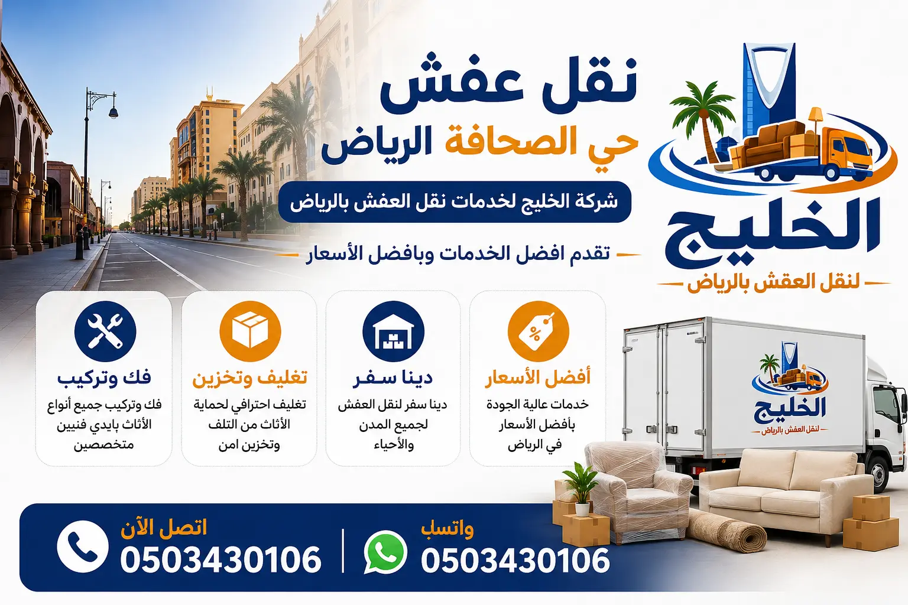

شركة الخليج لنقل العفش تقدم خدمات نقل الأثاث في حي الصحافة بالرياض بأعلى مستويات الجودة والاحترافية، حيث نوفر فك وتركيب الأثاث، تغليف العفش، ونقل جميع أنواع العفش باستخدام سيارات مجهزة. نحن نعتبر شركة نقل عفش بالرياض ذات السمعة الطيبة التي يعتمد عليها سكان حي الصحافة تحديداً.
فك وتركيب جميع أنواع الأثاث باحترافية
تغليف احترافي لحماية الأثاث من الخدوش
ضمان على سلامة الأثاث أثناء النقل
تُعد شركة نقل عفش حي الصحافة بالرياض الخيار الأمثل لكل من يبحث عن التميز والاحترافية في نقل الأثاث بهذا الحي الحيوي الذي يقع في شمال الرياض. يتميز حي الصحافة بقربه من طريق الملك خالد وطريق الإمام سعود بن عبدالعزيز، مما يسهل الوصول إليه، كما يضم العديد من المجمعات السكنية الحديثة والفلل الفاخرة، مما يجعل الحاجة إلى شركة نقل موثوقة أمراً ضرورياً. نحن في شركة الخليج لنقل العفش نمتلك خبرة تمتد لأكثر من 15 عاماً في تقديم خدمات نقل العفش داخل هذا الحي، حيث نتعامل مع كافة أنواع الأثاث بدءاً من القطع الحديثة وصولاً إلى التحف العتيقة والأثاث الفاخر. تبدأ أسعارنا التنافسية من 350 ريال فقط، وتختلف حسب حجم العفش وعدد الغرف، لكننا نقدم دائماً أفضل قيمة مقابل المال مقارنة بالشركات الأخرى في المنطقة. نعتمد في عملنا على فريق من العمالة المدربة التي تخضع لدورات تدريبية مستمرة على كيفية التعامل مع الأثاث في الأبراج العالية والفلل ذات السلالم الواسعة. كما نتميز بالالتزام التام بالمواعيد، حيث نصل في الوقت المحدد وننهي عملية النقل بأسرع وقت ممكن دون أي تقصير في الجودة. إذا كنت تبحث عن أفضل شركات نقل العفش في الرياض لحماية أثاثك، فإن شركة الخليج هي الاسم الموثوق. كما ننصح بقراءة نصائح مهمة قبل نقل العفش لتكون على دراية كاملة بكيفية تجهيز منزلك لعملية النقل. نحن نخدم جميع أنحاء حي الصحافة بما في ذلك مجمعات السكنية الفاخرة القريبة من برج رافال. اتصل بنا اليوم للحصول على عرض سعر مجاني وخدمة لا مثيل لها في نقل عفش حي الصحافة.
ما يميز شركتنا أيضاً هو قدرتنا على تقديم حلول متكاملة تبدأ من المعاينة الميدانية لتحديد حجم الأثاث والمسافة، مروراً بتوفير جميع مستلزمات التغليف من فوم وكراتين، وانتهاءً بإعادة تركيب الأثاث في المنزل الجديد. ندرك أن الانتقال من منزل لآخر يشكل ضغطاً نفسياً وجسدياً على أفراد الأسرة، لذا نحرص على تخفيف هذا العبء عنكم بالكامل. نستخدم أحدث أفضل مواد تغليف الأثاث لضمان عدم تعرض أي قطعة للخدش أو الكسر. وبفضل أسطولنا الحديث من السيارات المجهزة بأنظمة تثبيت متطورة، نضمن وصول عفشكم إلى وجهته الجديدة في حي الصحافة أو أي حي مجاور بحالة ممتازة. سواء كنت تنتقل من فيلا إلى أخرى أو من شقة إلى منزل أكبر، فإن فريقنا مستعد لتلبية احتياجاتك على مدار الساعة طوال أيام الأسبوع. كما نوفر خدمة فك وتركيب غرف النوم والأثاث لضمان انتقال شامل.

نحن نقدم مجموعة متكاملة من خدمات نقل العفش في حي الصحافة تغطي جميع احتياجات سكان هذا الحي العصري. تشمل خدماتنا نقل عفش المنازل، الفلل، القصور، الشقق، والمكاتب التجارية. كما أننا نقدم خدمات مساعدة مثل فك وتركيب الأثاث، تغليف العفش بمواد عازلة، بالإضافة إلى خدمات متخصصة مثل فك وتركيب غرف النوم وتركيب أثاث ايكيا، وهي خدمات ضرورية جداً عند نقل الأثاث من منزل إلى آخر، حيث نضمن لك تركيبه بكفاءة عالية بعد النقل. ندرك أن حي الصحافة يحتوي على العديد من الأبراج السكنية المرتفعة مثل أبراج الصحافة، لذلك وفرنا ونشاً مخصصاً لرفع العفش للأدوار العليا، مما يوفر الوقت والجهد ويحمي الأثاث من التلف الناتج عن استخدام السلالم. نحن نضمن لك وصول عفشك إلى المكان الجديد بحالة ممتازة، بفضل اعتمادنا على أحدث السيارات المجهزة بأنظمة تعليق هوائي تقلل من الاهتزازات. لمزيد من المعلومات حول نقل الأثاث داخل الرياض، يمكنك زيارة دليل أحياء الرياض لنقل العفش الشامل الذي أعده خبراؤنا. ومن أجل تحقيق أقصى حماية، نوصي بالاطلاع على كيفية حماية الأثاث أثناء النقل لتتعرف على الإجراءات الدقيقة التي نتخذها للحفاظ على ممتلكاتك. نحن نؤمن بأن العميل يستحق الأفضل، لذلك لا نقدم وعوداً فارغة بل نقدم خدمات قابلة للقياس والتقييم عبر نقل الأثاث في الرياض. اتصل بنا لتحصل على عرض سعر مفصل يتناسب مع حجم العفش الخاص بك في حي الصحافة.
خدمة نقل عفش المنازل بحي الصحافة التي نقدمها تشمل كل شيء بدءاً من غرف النوم الرئيسية وغرف الأطفال وصولاً إلى المطابخ المتكاملة والمجالس العربية الفاخرة. نحن ندرك أن كل منزل في حي الصحافة له طابعه الخاص، فبعض المنازل تحتوي على أثاث كلاسيكي ثقيل يحتاج إلى تفكيك دقيق، وبعضها الآخر يحتوي على ديكورات حديثة وأجهزة كهربائية ذكية. فريقنا من المدربين على أعلى مستوى قادر على التعامل مع جميع هذه الحالات بمهنية واحترافية. نولي اهتماماً كبيراً بمرحلة التغليف، حيث نستخدم أكثر من طبقة من البلاستيك الفقاعي (بابل راب) والكراتين المقواة لحماية قطع الأثاث الحساسة مثل الزجاج والمرايا والأجهزة الإلكترونية. في شركة الخليج لنقل العفش، نعتز بسمعتنا التي بنيناها على مدى سنوات من العمل الدؤوب في حي الصحافة والأحياء المجاورة. نوصي عملاءنا الكرام بقراءة أفضل شركة نقل عفش الرياض لمعرفة المزيد عن جودة خدماتنا. كما أننا نقدم نصائحنا عبر مدونتنا حول مواد تغليف الأثاث لتكون على دراية بالجهد الكبير الذي نبذله لحماية ممتلكاتك. نستخدم سيارات مجهزة بأحزمة ربط قابلة للتمدد لمنع تحرك الأثاث أثناء السير، كما أن سائقينا مدربون على القيادة بهدوء لتفادي المطبات أو الفرامل المفاجئة التي قد تؤدي إلى تلف الأثاث. نضمن لك انتقالاً سلساً وآمناً لمنزلك في حي الصحافة، دون أي خدوش أو أضرار، مع إمكانية الاستعانة بخدمات تغليف العفش بالرياض كخدمة إضافية.
نحن متخصصون في نقل الشقق السكنية بحي الصحافة، وهو الحي الذي يشهد إقبالاً كبيراً على الشقق الحديثة والفاخرة خاصة القريبة من طريق الملك خالد. نواجه تحديات يومية مثل عدم وجود مصاعد كبيرة في بعض المباني القديمة نسبياً، أو الحاجة إلى تصاريح دخول للأبراج الفاخرة. فريقنا لديه خبرة كاملة في التعامل مع إدارات المجمعات السكنية في حي الصحافة والحصول على التصاريح اللازمة مسبقاً لضمان عدم تأخير عملية النقل. نقدم خدمة ونش رفع عفش للأبراج العالية التي يصعب نقل الأثاث الثقيل فيها عبر المصاعد، مما يحمي جدران المبنى والمصعد من الخدوش. كما أننا نراعي أوقات الهدوء في المجمعات السكنية لنقل العفش في الأوقات المسموحة. لضمان تجربة مثالية، ننصح بالاطلاع على دليل شركات نقل العفش في الرياض لتتعرف على مستوى خدماتنا. كما يمكنك معرفة تفاصيل الفك والتركيب عبر فك وتركيب العفش في الرياض. نقدم أيضاً خدمات فك وتركيب لغرف النوم والأثاث بالتعاون مع نجارين متخصصين في فك وتركيب غرف النوم، فهذه الخدمة تكمل بعضها البعض لضمان انتقال شامل. عندما تختارنا لنقل شقتك في الصحافة، فإنك تختار راحة البال التامة.
خدمة نقل الفلل والقصور بحي الصحافة تتميز بالدقة العالية والتعامل مع التحف والأثاث الفاخر. حي الصحافة يضم العديد من الفلل الضخمة والقصور التي تحتوي على أثاث إيطالي وفرنسي فاخر يحتاج إلى أيدي أمينة وخبرة في التفكيك وإعادة التركيب. نحن نمتلك فريقاً متخصصاً في التعامل مع الأثاث الفاخر من خلال نقل فلل بالرياض، حيث نستخدم مواد تغليف خاصة مثل الفوم السميك والزوايا الكرتونية المقواة لحماية الزوايا الحادة والأجزاء المذهبة. قبل البدء في النقل، نقوم بتوثيق حالة الأثاث بالصور والفيديو بالاتفاق مع العميل، لضمان الشفافية التامة. يمكنك الاطلاع على أفضل شركة نقل عفش في الرياض لتتعرف على ترتيبنا المتقدم في هذا المجال. كما أننا نقدم استشارات مجانية حول كيفية تخزين الأثاث في الرياض إذا كنت بحاجة إلى تخزين بعض قطع الأثاث أثناء تجديد الفيلا. خبرتنا الطويلة في نقل القصور جعلتنا نتفوق على منافسينا في تقديم حلول مبتكرة لنقل الثريات الكريستالية الكبيرة واللوحات الفنية. نحن نعتبر أنفسنا أكثر من مجرد شركة نقل، بل شركاء في الحفاظ على تراثكم المنزلي. اتصل بنا لحجز موعد مع فريق نقل الفلل الخاص بنا في حي الصحافة.
مع النمو الاقتصادي السريع في الرياض، أصبح حي الصحافة وجهة للعديد من الشركات والمؤسسات نظراً لقربه من طريق الملك خالد ووسط الرياض. نحن نقدم خدمة نقل المكاتب والشركات بحي الصحافة بطريقة احترافية تقلل من وقت التوقف عن العمل. نعمل خارج أوقات الدوام الرسمي (في المساء أو خلال عطلات نهاية الأسبوع) لنقل المكاتب بالكامل بما فيها الأجهزة الحساسة (سيرفرات، أجهزة كمبيوتر) والملفات الهامة. لدينا فريق متخصص في فك وتركيب المكاتب الحديثة القابلة للتعديل، ونقل الخزائن المعدنية الثقيلة. كما أننا نتعامل مع شركات الأمن والحراسة في الأبراج التجارية بالصحافة لتنسيق عملية الدخول والخروج. نحن ندرك أن وقت العميل التجاري هو أموال، لذا نحرص على الانتهاء من المهمة في أسرع وقت ممكن مع الالتزام بمعايير الجودة. يمكنك الاطلاع على دليل شركات نقل العفش في الرياض لتجد أننا الأكثر خبرة في نقل المكاتب. كما ننصح بقراءة خدمات نقل العفش داخل الرياض لترى كيف نجمع بين الجودة والسعر المناسب.
تعتبر خدمة فك وتركيب العفش بحي الصحافة حجر الزاوية في عمليات النقل الناجحة، ولدينا نجارين محترفين على أعلى مستوى من المهارة. نقوم بفك غرف النوم بجميع أنواعها (سرير، خزانة، تسريحة) وتغليف القطع الصغيرة وترقيمها لتسهيل عملية إعادة التركيب في المنزل الجديد. كما أننا متخصصون في فك المطابخ الحديثة والتي تحتوي على أنابيب غاز ومياه، حيث نتعامل معها باحترافية تامة بالتنسيق مع سباكين وفنيين متخصصين. بالنسبة لأثاث ايكيا (IKEA)، لدينا خبرة خاصة في التعامل مع مساميره وتفاصيله الدقيقة، حيث نقوم بالفك دون إتلاف أي جزء. يمكنكم الاطلاع على دليلنا المتخصص في خدمة فك وتركيب غرف النوم لمعرفة الخطوات الدقيقة التي نتبعها. كما أننا نقدم خدمة خدمات نقل العفش داخل الرياض والتي تشمل الفك والتركيب كحزمة واحدة بسعر مخفض. فريق النجارة لدينا يحمل أدواته الخاصة (مفكات كهربائية، عدادات) لضمان فك سريع ودقيق، ونضمن لكم إعادة تركيب الأثاث في موقعه الجديد بنفس القوة والثبات كما كان من قبل.
خدمة تغليف العفش في حي الصحافة لا تقل أهمية عن عملية النقل نفسها، فهي الدرع الواقي الذي يحمي أثاثك من الخدوش والغبار والرطوبة. نحن نستخدم أفضل أنواع مواد التغليف المتوفرة في السوق، بدءاً من البلاستيك الشفاف عالي الجودة (الاسترتش)، وصولاً إلى البطانيات السميكة المخصصة لحماية الأجهزة الكهربائية. نقوم بتغليف الأجهزة الإلكترونية الحساسة مثل شاشات LED والبلازما بكراتين مزدوجة الجدران وفوم داخلي عازل للصدمات. كما أننا نقدم خدمة تغليف الأثاث في الرياض التي تؤكد على ضرورة التغليف كخطوة أساسية. عند تغليف المطابخ، نقوم بتفريغ الأدراج وتغليف كل درج على حدة لتجنب تكسر المحتويات، ونستخدم أشرطة لاصقة قوية لتثبيت الأبواب. في شركة الخليج لنقل العفش، نعتبر التغليف فناً نتقنه، وهو ما يظهر جلياً في حالة الأثاث عند وصوله إلى وجهته النهائية. ننصح بقراءة كيفية حماية الأثاث أثناء النقل لتدرك أهمية الاعتماد على خبرائنا في هذه المهمة. نضمن لك أن أثاثك سيصل بحالة أفضل مما تتوقع بعد خدمات التغليف الاحترافية التي نقدمها.
أسطولنا من دينا نقل عفش حي الصحافة يضم أحدث الموديلات من السيارات المجهزة بأنظمة تعليق هوائي تخفف من حدة الصدمات على الطرق. نوفر أحجاماً مختلفة من السيارات تناسب كافة الاحتياجات؛ بدءاً من الدينا الصغير لنقل الغرفة الواحدة أو الأغراض البسيطة، وصولاً إلى الشاحنات الكبيرة المخصصة لنقل الفلل والقصور بالكامل. جميع سياراتنا تحتوي على بطانيات داخلية لحماية جدران السيارة من الخدوش، وأحزمة ربط قابلة للشد لتثبيت الأثاث ومنع حركته. نحرص على أن تكون السيارات نظيفة ومعقمة قبل تحميل العفش، حفاظاً على صحة أسرتكم. يمكنك مقارنة أسعارنا عبر الاطلاع على شركات نقل العفش بالرياض، حيث نقدم أفضل العروض على سيارات النقل. كما ننصح بالتواصل معنا مباشرة للحصول على عرض سعر مخصص حسب نوع سيارات النقل التي تحتاجها. فريق السائقين لدينا على دراية كاملة بشوارع حي الصحافة وطرقه البديلة، مما يضمن وصول سيارات النقل في الوقت المحدد حتى في أوقات الذروة. نحن نضمن لك نقلاً آمناً وسريعاً مع الحفاظ على ممتلكاتك.
تعتبر خدمة ونش رفع عفش حي الصحافة ضرورية جداً في هذا الحي الذي يضم العديد من الأبراج السكنية العالية التي قد لا تستوعب مصاعدها قطع الأثاث الكبيرة مثل الغسالات أو الخزائن الضخمة أو البيانو. نمتلك ونشاً هيدروليكياً حديثاً يمكنه الوصول إلى ارتفاعات تصل إلى 50 متراً، مع نظام تثبيت آمن يضمن عدم اهتزاز الحمولة أثناء الرفع. نحن نتعامل مع إدارات الأبراج في حي الصحافة للحصول على التصاريح اللازمة لتشغيل الرافعة في المواقف المخصصة. قبل استخدام الونش، نقوم بتغليف الأثاث بشكل مضاعف وتأمينه بحبال قوية جداً. إذا كنت بحاجة إلى نقل أثاث ثقيل إلى شقة في دور مرتفع، فإن خدمة الونش هي الحل الأمثل الذي يوفره فريق موقع الخليج لنقل العفش. تبدأ أسعار الونش من 450 ريال حسب ارتفاع الدور ووزن الأثاث. هذه الخدمة توفر عليك عناء تفكيك الأثاث إلى أجزاء صغيرة أو المخاطرة بتلفه على السلالم. نحن نضمن لك رفعاً آمناً وسريعاً يوفر الوقت والجهد.
نقدم خدمة تخزين العفش بحي الصحافة في مستودعات مجهزة بأحدث أنظمة مكافحة الحرائق والتكييف للحفاظ على الأثاث من الرطوبة والعفن. سواء كنت مسافراً لفترة طويلة أو تقوم بتجديد منزلك، فإن مستودعاتنا الآمنة توفر لك مساحة لحفظ الأثاث لشهور أو حتى سنوات. قبل التخزين، نقوم بتنظيف الأثاث وتعقيمه، ثم تغليفه بمواد تحافظ عليه من الغبار والحشرات. نوفر مساحات تخزين تبدأ من 150 ريال شهرياً، مع إمكانية الوصول إلى المخزن في أي وقت بالتنسيق المسبق. يمكنك الاطلاع على أفضل شركة تخزين عفش في الرياض لتقرأ تقييمات عملائنا السابقين. كما نقدم خدمة تخزين الأثاث في الرياض مع إمكانية توصيل العفش من وإلى المستودع بواسطة سياراتنا المجهزة. نحن نضمن لك الحفاظ على عفشك في نفس الحالة التي استلمناه بها، مع إمكانية التأمين على الأثاث المخزن ضد المخاطر. اتصل بنا لمعرفة المزيد عن خيارات التخزين المتاحة لك في حي الصحافة.
نقدم لكم جدول مقارنة يوضح الفرق بين شركة الخليج والشركات الأخرى في أسعار نقل العفش حي الصحافة الرياض.
| البند | شركة الخليج | شركات أخرى |
|---|---|---|
| سعر نقل شقة (3 غرف) | 350 - 650 ريال | 550 - 1000 ريال |
| سعر نقل فيلا (5 غرف) | 900 - 2200 ريال | 1300 - 3800 ريال |
| سعر ونش رفع عفش | 450 - 900 ريال | 650 - 1300 ريال |
| دينا نقل عفش | 300 - 450 ريال | 400 - 650 ريال |
| فك وتركيب | نجارين محترفين مجاناً | برسوم إضافية 250-450 ريال |
للاطلاع على المزيد من التفاصيل حول سياسة التسعير لدينا، يمكنك قراءة دليل شركات نقل العفش في الرياض كما ننصح بزيارة شركة الخليج لنقل العفش للاطلاع على عروضنا الحصرية.
تقدم شركة الخليج لنقل العفش خدماتها المتكاملة من الفك والتركيب والتغليف والنقل والشحن في كافة أحياء ومناطق العاصمة الرياض، بأسطول سيارات حديثة وفنيين مدربين. انقر على الحي للوصول للتفاصيل:
أهم 15 سؤالاً يبحث عنها عملاؤنا في حي الصحافة مع إجابات شافية ومفصلة.
تُعتبر شركة الخليج لنقل العفش الأفضل في حي الصحافة بفضل خبرتها التي تمتد لأكثر من 15 عاماً، وأسطولها الحديث من السيارات المجهزة، وفريقها المدرب على أعلى مستوى، بالإضافة إلى أسعارها التنافسية وضمانها الشامل على سلامة الأثاث. يمكنك زيارة الرئيسية للمزيد عن خدماتنا.
تبدأ أسعار نقل العفش في حي الصحافة من 350 ريال للشقق الصغيرة (غرفتين إلى 3 غرف)، وتزيد حسب كمية الأثاث والخدمات المطلوبة مثل الفك والتركيب أو استخدام الونش. للحصول على تفاصيل دقيقة، يمكنك الاتصال بنا لمعاينة مجانية. يمكنك أيضاً الاطلاع على دليل أسعار نقل العفش بالرياض.
نعم، نوفر خدمة فك وتركيب جميع أنواع الأثاث في حي الصحافة على يد نجارين متخصصين. نتعامل مع غرف النوم والمطابخ والمجالس والمكاتب بكل احترافية عبر خدمة فك وتركيب غرف النوم ودليل فك وتركيب العفش بالرياض.
نعم، نمتلك ونش هيدروليكياً حديثاً مخصصاً لرفع العفش في الأبراج العالية والفلل الكبيرة. أسعار الونش تنافسية تبدأ من 450 ريال حسب ارتفاع الدور ووزن الأثاث. هذه الخدمة مثالية لأبراج حي الصحافة الشاهقة مثل أبراج الصحافة السكنية.
نعم، لدينا مستودعات تخزين مجهزة بأحدث أنظمة الأمان والتكييف ومكافحة الحرائق. نقدم خدمة تخزين العفش بأسعار تبدأ من 150 ريال شهرياً عبر تخزين الأثاث في الرياض. كما يمكنك الاطلاع على أفضل شركة تخزين عفش في الرياض لمزيد من التفاصيل.
نستخدم أفضل مواد التغليف مثل البلاستيك الفقاعي (بابل راب)، والفوم السميك، والكراتين المقواة. يمكنك التعرف على المواد التي نعتمد عليها عبر أفضل مواد تغليف الأثاث وخدمات تغليف الأثاث بالرياض. نضمن حماية كاملة من الخدوش والكسر.
نعم، لدينا فريق متخصص في نقل المكاتب والشركات خارج أوقات الدوام الرسمي (مساءً أو weekends) لضمان عدم تعطيل العمل. ننقل السيرفرات والأجهزة الحساسة والملفات بأمان تام. ننصح بقراءة خدمات نقل العفش داخل الرياض لمعرفة المزيد.
بالتأكيد، نوفر خدمة متكاملة لفك وتركيب الأثاث تشمل فك وتركيب غرف النوم وتركيب أثاث ايكيا. لدينا نجارون محترفون لجميع انواع الخشب والأثاث.
ننصح بقراءة دليلنا الشامل عن كيفية حماية الأثاث أثناء النقل. كما نقدم نصائح مهمة قبل النقل عبر نصائح مهمة قبل نقل العفش. اختيار شركة محترفة مثل الخليج هو الضمان الأول لحماية أثاثك.
نعم، لدينا فريق متخصص في نقل فلل بالرياض. نتعامل مع الأثاث الفاخر والتحف واللوحات الفنية بدقة متناهية، مع توثيق حالة الأثاث قبل النقل بالصور والفيديو لضمان الشفافية التامة.
نخدم جميع أحياء الرياض، وخاصة الأحياء الشمالية والشرقية. من بينها: نقل عفش حي الملقا، النرجس، الياسمين، الروضة، النسيم، وغيرها. يمكنك الاطلاع على دليل أحياء الرياض لنقل العفش.
نعم، شركة الخليج لنقل العفش مرخصة رسمياً من الجهات المختصة في المملكة العربية السعودية، ونلتزم بجميع القوانين واللوائح. نحن نعتبر من أفضل الشركات في هذا المجال كما هو موضح في أفضل شركة نقل عفش في الرياض.
متوسط وقت نقل شقة مكونة من 3 غرف في حي الصحافة يتراوح بين 4 إلى 6 ساعات، يشمل ذلك الفك والتغليف والنقل والتركيب. الفلل الأكبر قد تستغرق يوماً كاملاً. نحرص على السرعة دون التضحية بالجودة.
نعم، كجزء من خدماتنا المتكاملة، نقدم تغليف العفش بالرياض باستخدام الفقاعي والكرتون المقوى لحماية ممتلكاتك بالكامل بحي الصحافة.
للحصول على عرض سعر دقيق ومجاني، يمكنك الاتصال بنا على الرقم 0503430106 أو عبر الواتساب. سنقوم بمعاينة العفش عن بُعد عبر الفيديو أو إرسال مندوب للمعاينة الميدانية (حسب رغبتك) لتحديد حجم الأثاث وعدد العمال ونوع السيارات المناسبة. نضمن أن يكون عرض السعر الذي نقدمه هو السعر النهائي بدون أي رسوم خفية. يمكنك أيضاً زيارة نقل الأثاث في الرياض للمزيد من المعلومات.